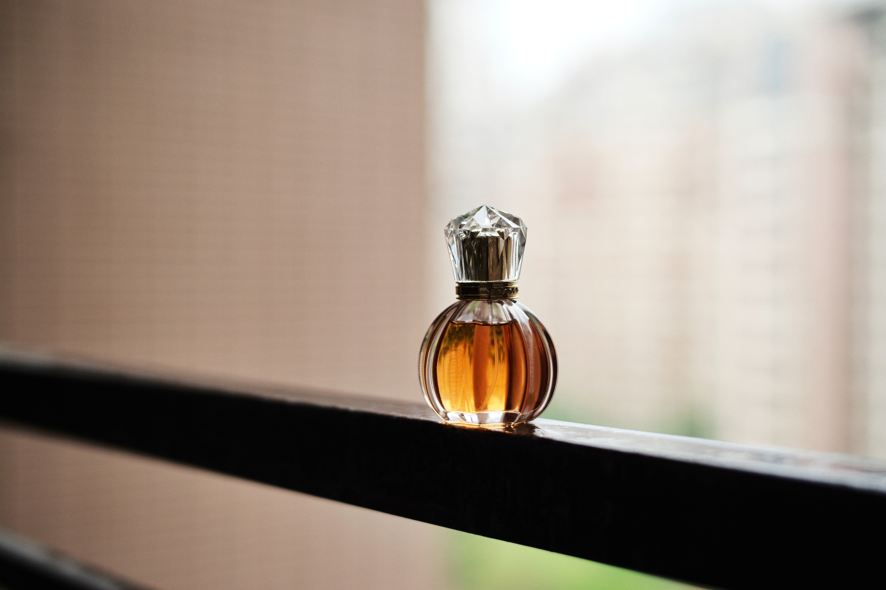

Foi em puan de ville
que Pierer Parfum
nasceu do Monsoir.
Paul Pierer
1965
Foi em puan de ville
que Pierer Parfum
nasceu do Monsoir.
Paul Pierer
1975
2001
Paul Pierer faleceu, e deixou uma missão “Ilumnar o mundo com Pierer”
2010
Lançamento da linha Pierer femenina com ESCADA
